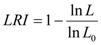

Micro-credit requirement, acquisition and repayment by vegetable farmers in Niger State, Nigeria
Abstract
The study investigated micro-credit administration among vegetable farmers in Niger State, Nigeria. Structured questionnaire was administered on 240 respondents to collect the data analysed using descriptive statistics, linear and multinomial logit regressions to examine factors that determine access and repayment of credit. The findings showed that the respondents had average family size of five, average age of 41 years, average farm size of 2.5ha and low educational background. About 62.5% of the respondents obtained their credit from informal sources while 37.5% patronized formal sources. The study shows that mean disbursement was N54,650 as against mean application of N61,079. Age, gender, household size, interest rate and educational level where among the factors that influence repayment capacity of vegetable farmers. It is recommended that microfinance institutions should extend credit to farmers based on need and not solely based on their technical requirements so as to ensure that the farmers are able to achieve their farm targets and hence pay back the loan.
Author:
Job Nda Nmadu
Dept. of Agric. Econ. and Ext. Tech.
Federal University of Technology
Minna, Nigeria
Abdulrahman Nasafe Bako
Community and Social Dev. Agency
Abdullahi Kure House
Minna, Nigeria
Kpotun Mohammed Baba
Dept. of Agric. Econ. and Ext. Tech.
Federal University of Technology
Minna, Nigeria
Paper Transcript of Paper Titled :
Micro-credit requirement, acquisition and repayment by vegetable farmers in Niger State, Nigeria
Micro-credit requirement, acquisition and repayment by vegetable farmers in Niger State, Nigeria
Job Nda Nmadu
Dept. of Agric. Econ. and Ext. Tech.,
Federal University of Technology,
Minna, Nigeria
Abdulrahman Nasafe Bako
Community and Social Dev. Agency,
Abdullahi Kure House
Minna, Nigeria
Kpotun Mohammed Baba
Dept. of Agric. Econ. and Ext. Tech.,
Federal University of Technology,
Minna, Nigeria
Abstract—The study investigated micro-credit administration among vegetable farmers in Niger State, Nigeria. Structured questionnaire was administered on 240 respondents to collect the data analysed using descriptive statistics, linear and multinomial logit regressions to examine factors that determine access and repayment of credit. The findings showed that the respondents had average family size of five, average age of 41 years, average farm size of 2.5ha and low educational background. About 62.5% of the respondents obtained their credit from informal sources while 37.5% patronized formal sources. The study shows that mean disbursement was N54,650 as against mean application of N61,079. Age, gender, household size, interest rate and educational level where among the factors that influence repayment capacity of vegetable farmers. It is recommended that microfinance institutions should extend credit to farmers based on need and not solely based on their technical requirements so as to ensure that the farmers are able to achieve their farm targets and hence pay back the loan.
Keywords- Micro-Credit, Acquisition, Repayment capacity, Small Scale Farmers
Introduction
Credit in Agriculture is crucial given that majority of the poor in developing countries are farmers. In the last two decades, development planners have shifted their focus from supporting large scale capital intensive projects to meeting the needs of poor people, especially rural communities. Today’s attempt at constructing a development frame-work has seen governments and the private sector committing huge sums of money into financing the activities of farmers through microcredit [1]. Some farmers are poor because they cultivate small areas from which they produce little output and hence sell only a very small amount, which in turn cannot help in expanding the farm or acquiring new technology and hence the cycle continues. Credit to small holder farmers can help in breaking this cycle. Credit is required to purchase improved technology which is vital for increased output and overall expansion of the farm. Credit can, however, only help in breaking the poverty cycle if the farmers are aware of the technology and are capable of using it. Credit has always had a special place in the mainstream thinking of conventional economic theory [2]. It has been observed by Etuk [3] that in the 1950s and 1960s, provision of credit was the key instrument for breaking the vicious cycle of poverty i.e. low savings and productivity. Admittedly, from early 1970s up to the present time, the rural poor and small scale farmers have increasingly become the target of credit provisions especially in the developing countries [4].
In an effort to improve the growth and output of Agriculture in Nigeria, Government initiated many agricultural credit policies and programmes aimed at improving the credit needs of farmers. The crucial roles agriculture play in the country’s economy, the structure of production wherein the small-holder dominates, producing 90-95% of total agricultural output, the rate of increasing urbanization currently being experienced, and policy shift towards smallholder since 1988 demands repositioning of the sector. This requires financial boosting as most of the farmers are very poor and inadequate finance has hindered meaningful development in the sector [5]. In order words, credit is not a panacea for improved agricultural production. Credit to small farmers in the absence of the knowledge and use capability of technology can even prove harmful since the farmers can become heavily indebted and be unable to pay back. In Nigeria as in the rest of the sub-Saharan Africa, access to financial services is low and access to credit is much lower [6]. The realization of the need to tackle the problems of agricultural finance, the Federal Government (FG) established Nigerian Agricultural and Co- operative Bank now transformed to Nigerian Agricultural Co-operatives and Rural Development Bank (NACRDB) in 2000. The Central Bank of Nigeria (CBN) directed Merchant, Mortgage and Commercial banks to give credit to farmers at concessionary interest rates to address the problems militating against agricultural development and finance. Recently, the Federal Government introduced the Commercial Agricultural Credit Scheme to provide credit facilities to small holder farmers through co-operative groups. The government, in 2010 set aside N200 Billion to be accessed through the CBN in collaboration with participating commercial banks. However, these measures present a mixed result with farmers raising issues ranging from retrogressive bureaucracy in processing and disbursement procedures to lack of organized market for farm produce from loans collected while the banks allege low rates of repayment by farmers. In the past many credit agencies were scrapped for gross inefficiency while others were heavily subsidized in order to keep afloat. This action became necessary because of high defaults rates among borrowers [7]. Lending institutions are concerned about risks associated with default. High defaults in many cases above 50% have been recorded by lending institutions. This study therefore critically examined the factors that determine credit access and repayment by vegetable farmers in Niger State. This is because vegetable production has short gestation period and can be grown in two or three cycles in a year. It also has high productivity, sales very fast with high cash value. The crop grows well under irrigation that produces more returns than rain fed. The outcome of the demand for credit depends on the lending practices of the credit agencies. According to Anderson [8], credit institutions are concerned with losses from untimely repayment or default, seek to minimize these by choosing carefully the distribution of credit across farmers. An investigation into the relationship between farmers circumstances and characteristics and their receipts or otherwise of credit may shed light on the factors that influence the lenders behaviour. Also a number of reasons have been adduced to loan default, little is known about the effect of socio-economic factors affecting loan repayment capacity of small scale farmers.
methods
The study was conducted in Niger State of Nigeria. The State lies between latitude 80 211 North (N) and 110 301N and Longitude 30 301E and 70 201E in the North central Geopolitical Zone of Nigeria. The State is bordered to the North by Zamfara State, to the North-east by Kebbi State, to the South by Kogi State, to the South-west by Kwara State, to the West by Benin Republic and Kaduna State and the Federal Capital Territory (FCT) border the State strategically to the North-east and southeast, respectively.
The data for the study was obtained from primary sources and complemented with secondary. A total of 270 respondents were selected through multi-stage sampling from the three Agricultural zones of the State. First stage sampling consists of selection of two Local Government Areas purposively from each of the three agricultural zones of the State. These are Gbako & Mokwa in zone I: Chanchaga & Rafi in zone II and Mariga & Magama in zone III. The second stage involve selection of one extension block from the Local Government Area followed by the selection of three extension cell and then finally the fourth stage selection of five vegetable farmers from each of these cells. Structured interviewed schedule was administered to collect cross sectional data from the respondents. A total of 240 out of 270 questionnaire administered were returned which represents 89% of the total. The population for the study was made up of all vegetable farmers in Niger State with focus on farmers that have benefited from micro-credit from institutionalized micro-credit agencies. The data for the study was obtained from a combination of primary and secondary data. The study was conducted using the structured interview schedule to collect data. The respondents were vegetable farmers’ household head. Trained Enumerators from the Niger State Agricultural Development Project were employed to administer the questionnaire. Statistical tools used in the analysis of data generated include frequency distribution, percentages, means, logit and multiple regressions. The socio-economic characteristics of the respondents were described using descriptive statistics while the factors that determined access to micro-credit were determined using equation (1).
Y = f(X1, X2, X3, X4, X5, X6, X7, X8, X9, X10) (1)
Where Y = Amount of micro-credit (access) X1 = Age (in years), X2 = Educational background (No. of years spend on formal education), X3 = Annual income from farming and non- farm activities, X4 = Farm size (ha), X5 = Farming status (1 if full time farmer, O if otherwise), X6 = Interest on loan (%), X7 = Gender (1 if male, O otherwise), X8 = Marital status (1 if married, O otherwise), X9 = Family size (No. of persons), X10 = Extension visit (No of extension visits within the last one year).
The factors affecting the micro credit repayment vegetable farmers were determined using the multinomial logistic model. Multinomial models are appropriate when individuals can choose only one outcome from among the set of mutually exclusive, collectively exhaustive alternatives. The choice of this method is based on the fact that the level of loan repayment (dependent variable) is a categorical variable which can take three (3) levels (those who have completely repaid = 0, those who have paid 50%=1, and others =2). The probability that the ith farmer belongs to the jth repayment group reduces to equation (2) while the generalized multinomial model is expressed in equation (3) and the probability of being in the base outcome group is presented in equation (4). Where i = 1,2..n variables k = 0, 1..j groups and βj = a vector of parameters that relates Xi’s to the probability of being in group j where there are j+1 groups. The various independent variables included in the final model are X1 = Age of farmer (years), X2 = Gender (1 = male, 0 = female), X3 = Household size (no of persons), X4 = Farm size (ha), X5 = Group membership (1 = participant; 0 = non participant), X6 = Extension visits (No of extension visit), X7 = Amount of loan received (N), X8 = Distance from dwelling to the bank (km), X9 = Non-farm occupations (1 = engaged, 0 = not engaged), X10 = Visit by loan officials (1 if received, 0 if otherwise), X11 = Loan disbursement lag (time between application and actual loan disbursement) in months, X12 = Interest on credit (N), X13 = Income from farming activities.
(2)
(3)
(4)
(5)
β3 = -(β1+β2) (6)
 (7)
To estimate the model the coefficients of the base outcome are normalized to zero (0). This is because the probabilities for all the choices must sum up to unity. Hence, for 3 choices only (3-1) distinct sets of parameters can be identified and estimated. The natural logarithms of the odd ratio of equations (2) and (3) give the estimating equation (5). This denotes the relative probability of each of the other groups to the probability of the base outcome. The estimated coefficients for each choice therefore reflect the effects of Xi`s on the likelihood of the farmers choosing that alternative relative to the base outcome. The estimation was done using Stata Statistical/Data analysis 11.2 software (9). The final estimates were selected based on the variables that converged during iteration. The coefficients of the base outcome were then recovered with equation (6) in line with Nmadu, and Peter (10) where β3 = coefficient of the variable of the base outcome (those who have completely repaid), β1 = estimated coefficient of the 50% repayment group, β2 = estimated coefficient of the others group. In addition, the partial derivatives or marginal effects and quasi-elasticities of the model were obtained from the software. Finally, McFadden’s (11) likelihood ratio index (LRI) also known as pseudo R2, similar to the R2 in a conventional regression, were computed via equation (7) where, lnL = log-likelihood function, lnL0 = log-likelihood computed with only the constant term.
results and discussion
The results of the analysis and the discussion of the results are presented in this section.
Socio-economic and demographic characteristics
The Socio-economic and demographic characteristics of vegetable farmers are presented on Table I. The mean Age of farmers based on the analysis of field data was found to be 41 years and majority of them are male (96.25%) and married (99.17%) with average household size of 5. The average farm plots possessed by the respondents are 2 and the average farm size is 2.5ha. The distribution revealed that majority of the vegetable farmers were between the age bracket of 41-50 years of age (53%) in line with similar findings [12]-[15]. Thus, the bulk of the farmers is therefore still energetic and should be reasonably enterprising, which a lot of positive implications for
Socio-economic characteristics
Variable |
Freq. |
% |
Age in (years) |
|
|
20-30 |
10 |
4.18 |
31-40 |
91 |
37.93 |
41-50 |
126 |
53 |
51- above |
13 |
4.89 |
Mean Age |
41yrs |
|
Sex |
|
|
Male |
231 |
96.25 |
Female |
9 |
3.75 |
Marital Status |
|
|
Married |
238 |
99.17 |
Single |
2 |
6.83 |
Family Size |
|
|
1-4 |
97 |
40.42 |
5-8 |
123 |
51.25 |
9-12 |
19 |
7.92 |
13-above |
1 |
0.42 |
Mean Size |
5 |
|
Educational level |
|
|
Quranic |
90 |
37.50 |
Adult |
57 |
23.75 |
Primary |
27 |
11..25 |
Secondary |
66 |
27.50 |
Years of Experience |
|
|
1-5 |
7 |
2.93 |
6-10 |
114 |
47.71 |
11-15 |
88 |
36.82 |
16-20 |
28 |
11.72 |
≥20 |
2 |
0.62 |
Mean |
11yrs |
|
No of plots cultivated |
|
|
1 |
7 |
2.92 |
2 |
221 |
92.08 |
3 |
12 |
5.0 |
Mean |
2 |
|
Farm size (ha) |
|
|
0-1 |
9 |
3.75 |
1.1-2 |
93 |
38.75 |
2.1-3 |
70 |
29.17 |
3.1-4 |
45 |
18.75 |
4.1-5 |
7 |
2.92 |
5.1-above |
16 |
6.67 |
Mean Farm size |
2.5ha |
|
Participation in community associations |
|
|
Participant |
231 |
96.26 |
Non Participant |
9 |
3.75 |
Access to Extension Service |
|
|
Yes |
236 |
98.33 |
No |
4 |
1.67 |
agricultural productivity, loan repayment capacity, risk bearing abilities and innovativeness of a farmer.
Amount of Credit Demanded and the actual amount disbursed
- Table II shows amount of credit applied for and the amount of micro-credit received by farmers after satisfying creditors’ requirements by farmers in the study area. The mean loan applied was N61,079 while the mean disbursement was N54,650 indicating that farmers received far below what they sought for which might be due to a number of constraints. The factors are likely to be related to the inability of the farmers to convince the creditor his capacity to repay the loan as well as lack of appropriate security.
Amount of loan applied for and the actual disbursed
Amount applied (N) |
Freq. |
% |
≤ 30,000 |
23 |
9.58 |
31,000 – 60,000 |
83 |
34.58 |
61,000 – 90,000 |
132 |
55 |
91,000 – 120,000 |
1 |
0.42 |
121,000 – above |
1 |
0.42 |
Mean |
N61,079 |
|
Amount disbursed (N) |
|
|
≤ 30,000 |
102 |
42.5 |
31,000 – 60,000 |
82 |
34.17 |
61,000 – 90,000 |
30 |
12.5 |
91,000 – 120,000 |
20 |
8.33 |
121,000 - above |
6 |
2.5 |
Mean |
N54,650 |
|
Determinants of Loan Demand
The estimates of the determinants of loan demand are presented on Table III. The R2 was 0.62, indicating the about 62% of the changes in demand and access for loan was explained by the exploratory variable and F- ratio was significant at 10%. The results showed that age, education, annual income, farm size, interest rate and marital status were significant. Age was positive implying that the older people have more access to credit than younger ones. This could be attributed to the fact that since older people tend to be more risk averse, the financial institutions are more comfortable in dealing with them. Older farmers also tend to adopt more innovations based on experience garnered from farming; then they will demand for more farm credit or loan. The level of education attainment could be interpreted that with higher education, the farmer had the greater potential for adoption of improved farming technologies and even expand farming activities which will require more capital, thereby leading to the demand for higher amount of farm loan. Farm size has a positive contribution to loan demand implying that farmers with larger farm size will demand higher volume of loan. Most large scale farmers however own some level of acceptable securities like life insurance policies, government securities [16]. The analysis also revealed that interest was negative, attributable to the fact that with higher the interest rate, the amount of loan demanded will be lowered [17]. Family size was positive suggesting that larger households might utilize family labour which helps to reduce labour cost and create avenue for improved efficiency. There is tendency that more adults in farming household implies more workforces which might lead to harnessing more capital in order the meet labour cost. It is important to emphasized that consideration are attached to provision of tangible assets and not social capital as security for credit by financial institutions which does not favour small scale farmer because they are deficient in acceptable collateral. The level of education shows that farmers with some level of education have high chances of accessing loans than illiterate ones.
Determinants of Loan Repayment Capability
The result of the estimates of the explanatory variables affecting repayment capacity is on Table IV. The results show that the set of significant explanatory variables and their sign vary across the groups. The coefficient for gender, educational
Coefficients on Credit Demand of Farmers
Variable |
Coefficient |
Marginal Effects |
Elasticity |
Age in (years) |
-141.338** (410.9909) |
|
|
Years in formal education |
5263.78** (4771.076) |
|
|
Annual income (farm/non- farm) |
-0.12168** (0.050915) |
-0.1474 |
-0.1217 |
Farm Size (ha) |
30446.28*** (3763.924) |
30446.3 |
0.98922 |
Farming Status |
-63712.1 (25023.84) |
-63712 |
-0.5593 |
Interest Rate (%) |
-44460.6*** (146458.8) |
0.06902 |
444461 |
Gender |
36507.9*** (13712.36) |
36507.9 |
0.29863 |
Marital status |
111718.3** (52056.56) |
111718 |
0.99283 |
Family Size |
3403.225** (1548.868) |
3403.23 |
0.17645 |
Extension visits |
1837.193 (2452.068) |
|
|
Constant |
-57951.7 (48892.96) |
|
|
NB: F( 31, 201)= 10.80***, R2= 0.6248, Adjusted R2= 0.5669, Root MSE= 35667. Values in parenthesis are standard errors, ***P<0.01, **P<0.05, *P<0.10
Coefficients of multinomial logistic regression determining repayment capability
Repayment capacity |
1 |
2 |
3 |
Distance (km) |
15.547* (11.65) |
-15.00 |
-0.5459* (0.396) |
Farm Size (ha) |
8.74* (8.6080) |
9.45 |
-0.711* (0.4138) |
Number of Plots |
13.20 (16.299) |
12.35 |
0.85 (1.2331) |
Farming Experience(years) |
-2.48453* (1.6396) |
2.53*** |
-0.05 (0.1208) |
Educational Level |
2.70* (2290.4) |
2.50 |
0.19 (1.1133) |
Household Size |
-0.11* (0.5760) |
-0.34 |
0.23577 (0.1580) |
Gender |
-6.08* (4273.6) |
10.80** |
16.89 (3334.5) |
Age |
0.11 (0.0954) |
-0.04 |
-0.06 (0.0502) |
Constant |
8.69 (6264.9) |
4.37 |
-13.05 (3334.3) |
NB: LR chi2(26) =97.37, Prob > chi2=0.0000, Log likelihood=-49.828, Pseudo R2=0.4942. 1=Those who have Completely Repaid their loans, 2=Those who have repaid more than 50% of the loan (base outcome), 3=The others. Values in parenthesis are standard errors, ***P<0.01, **P<0.05, *P<0.10
status and years of farming experience were significant for both groups relative to the base outcome but with different signs and levels of significance. While gender is negative for the complete repayment group it is positive for the 50% repayment group relative to the base outcome. Also, while educational status is significant at 10% level for both groups, it is negative for the complete repayment and positive for the 50% repayment group. Years of farming experience is negatively related to loan repayment at the 10% level for the complete repayment and 1% level for the 50% repayment groups. According to the results, probability of complete repayment is reduced by the sex of the respondents while the probability of 50% repayment group is increased by sex relative to other group. Majority of the respondents were males hence it appears that among the men, some have repaid 50% of the loan and while some have completed payment. Table 3 also indicated that the probability of complete repayment is increased when the respondents have attained higher educational status. This is hardly surprising as only more educated farmers would have acquired the knowledge base that is necessary to understand the nature of credit acquisition and repayment. Household size tends to reduce the probability of complete repayment in spite of the large family size. The result here seems to suggest that the third group what is encouraged by household size tending to contradict the estimate of marital status. However, the possibility of larger households evading their responsibilities
Distribution of respondents based on problems encountered
Problem |
Freq. |
% |
Bureaucratic Bottlenecks |
83 |
34.58 |
Distance from Sources of Credit |
20 |
8.3 |
Collateral & Security demanded |
187 |
77.9 |
High Interest charged |
150 |
62.5 |
Non-granting of amount applied |
87 |
36.25 |
Payback in Period |
93 |
38.75 |
such as payment of taxes, levies, fees and even repayment of credit taken is higher [18]. Years of farming experience reduces the probability of both complete repayment and 50% repayment, quite contrary to expectation as it is expected that with growing experience in farming, the farmer is able to better understand the production technology and all associated challenges thereby forming models of how to deal with such challenges intuitively. But with the challenges surrounding the respondents, particularly the low level of education, experience alone seems inadequate to guarantee loan repayment.
Problems faced by Vegetable Farmers in Accessing Loans
Table V shows the distribution of farmers according to the problems faced in accessing credit. The results revealed that 77.9% of the respondents indicated that collateral is a major obstacle in credit acquisition. Closely related are the high interest charged (62.50%), payback period (42.9%), delay in processing loan application (38.75%) and non-granting of amount requested (36.25%) respectively.
Conclusion
Repayment capability and capacity of small scale farmers have remained the greatest challenge in microcredit administration in Nigeria, mainly bothering on higher default rate. This study investigated the determinants of loans application and capacity of small scale vegetable farmers in the study area. The results revealed that vegetable farmers relied more on informal sources of credit such as friends, relatives, Adashi, money lenders than formal sources. Age, gender, household size, interest rate and level of education are the main policy variables and determines the repayment capacity of the respondents. In view of the foregoing, strengthening the existing credit institutions is required for effective loan delivery. This will ultimately provide the necessary funds for commercial production by farmers. In addition, the microfinance institutions should extend credit to farmers based on need and not solely based on their technical requirements so as to ensure that the farmers are able to achieve their farm targets and hence pay back the loan. CBN should compel microfinance institution to provide loans to farmers and to mitigate the repayments problems, a close relationship between lender and borrower can be applied through monitoring, business adviser and regular meetings and supervision. For example, a reward system for prompt payment could be introduced similar to the credit bay back programme under the Agricultural Credit Guarantee Scheme Fund (ACGSF). Finally, the loan disbursement should be done on time so as to avoid diversion to non-agricultural use.
References
Ike, P.C., & J.O. Abojei (2009). Access and loan repayment in Delta State Agricultural loan scheme, Nigeria; proceedings of the 23rd Annual National Proceedings of the 23rd Annual National Conference of Farm Management Society of Nigeria, held at Usman Danfodiyo University 14-17th Dec.2009.pp.25-33.
Todaro, M.P (2000) Economic Development Addison Wasley Longman. Inc. Seventh Edition.
Etuk, E.J. (1985). The Nigerian Business Environment: An Introduction to Business and Society in an African Economy, Macmillan Publication.
Ahmed, E. (1981), The distribution of rural income in Pakistan. The incidence of inequality. Department of Economics, University of Warmick, discussion paper No. 13, September, 1981.
Hyande, A.A., Oboh,V.U. & Ezihe,J.A.C.(2007). Loan repayment Among Smallholder Maize Farmers in Kalke Local Government Area, Plateau State, Nigeria. Consolidation of growth and Development of Agricultural sector proceedings of 9th Annual National Conference of Nigerian Association of Agricultural economics (NAAE) Held at Abubakar Tafawa Balewa University, Bauchi Nov.5-8, 2007. pp. 110-114.
Tunde, P. (2009). Credit Infrastructure and Private Enterprise Development Nigeria; www.creditreferencenigeria.com
Arene, C.I. (1992). Loan Repayment and Technical Assistance among Small holders Maize farmers in Nigeria. In African review of money, Finance and Banking, A supplement of savings and Development journal, 1, 65-70.
Anderson, J. (1990). “Does Regulation improves small farmers” Access to Brazilian Rural Credit. Journal of Development Economics, 33. pp. 67-87.
Nmadu, J.N., & Peter, J. (2010). Small scale Farmers’ willingness to take Agricultural Insurance in Paikoro Local Government Area of Niger State. In: Nmadu, J.N., Baba, K.M., Likita, T., Ojo, M.A., Yisa, E.S., Ibrahim, F.D. (eds). Commercial Agriculture, Banking Reforms and Economic down-turn: Setting a new Agenda for Agricultural Development in Nigeria. Proceedings of the 11th National Conference of the Nigerian Association of Agricultural Economists held at Federal University of Technology, Minna, Nigeria.
Mcfadden, D. (1974). The Measurement of Urban Demand. Journal of Public Economics, 3, 303-328.
Ngaski A.A., Kamba A.A., & Senchi, I.D. (2009). Asset Acquisition Scheme on Rural Household income and poverty in Yauri Emirate of Kebbi State, Nigeria. Proceedings of the 23rd Annual National conference of farm management society of Nigeria pp.695-703.
Tanko, L., Jirgi A.J., & Ogundeji A.A (2010): Impact of Fadama II Project on income of Tomato Farmers in Niger State, Nigeria. African Journal of Agricultural Research 5 (15); 1937-1940.
Iheke, O.R. (2006). Gender and Resource use Efficiency in Rice Production in Abia State, Nigeria. M.Sc. thesis, Michael Okpara University of Agriculture, Umudike, Nigeria.
Nwaru, J.C. (2004). Rural Credit Markets and Resource use in Arable crop production in Imo State Nigeria. Ph.D Dissertation, Michael Okpara University of Agriculture, Umudike, Nigeria.
Uduak, P.C. (2002). Administration of Smallholder Agricultural Loan. The NACB Experience, NACB Digest. A Journal of the NACB 12 (3).
Nwaru. J.C, Onyenweaku, C.E, & Nwagbo E.C (2008). Interest rate, farm credit demand and supply their determinants and implications for rural credit markets in Imo State of Nigeria. Journal of Agriculture and Food Science 3(2) PP137-149.
- [18] Afolabi, J.A. (2010). Analysis of Loan Repayment among Small scale Farmers in Oyo, State, Nigeria. In journal of Social Sciences 22 (2); 115-119.
- AUTHORS PROFILE
- Authors Profile
- Job N Nmadu obtained B.Sc. Agriculture from Ahmadu Bello University, Zaria (1987) then M.Sc. Agricultural Economics (1998) and Ph.D. in Agricultural Economics specializing in Econometrics (2002). He also obtained Diploma in Data Processing and Computer Programming (1995) from Soft Design Computer Institute, Zaria. He attended Advanced Leadership Course at Haggai Institute, Singapore in 2006 and obtained Competence as Trainer in 2011 at Olusegun Obasanjo Centre for Organic Research and Development (OOCORD) in conjunction with Nigerian Organic Agriculture Network (NOAN) facilitated by Agro Eco Louis Bolk Institute, Netherlands. He presently as Associate professor and the Second Vice President of Nigerian Association of Agricultural Economists (NAAE). He has supervised seven PhD students has more than 40 publications in local and international journals and conference proceedings. His current research is around poverty, food security and climate change.
Abdulrahman Nasafe Bako obtained a bchelor’s degree in Agriculture and Master of Technology in Agricultural Economics. He is an Agricultural Officer with Community and Social Development Agency (CSDA), Abdullahi Kure House Minna, Nigeria under Niger State Ministry of Agriculture and Natural Resources.
- Kpotun M Baba obtained B.Sc. Agriculture (1984) then M.Sc. Agricultural Economics (1989) and Ph.D. in Agricultural Economics specializing in Farm Management and Production Economics (2000) from Ahmadu Bello University, Zaria. He was awarded a professorial chair in 2001 and was Head of Department, Deputy Dean and Dean between 1993 and 2012. He has supervised more than 30 postgraduate students and has more than 50 publications in local and international journals and conference proceedings. His current research is around poverty, food security and irrigation development.